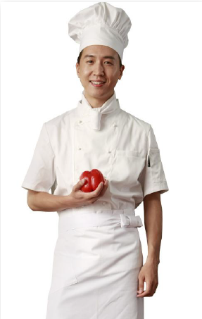
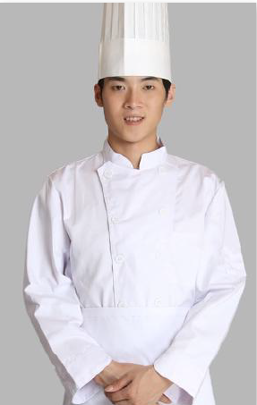
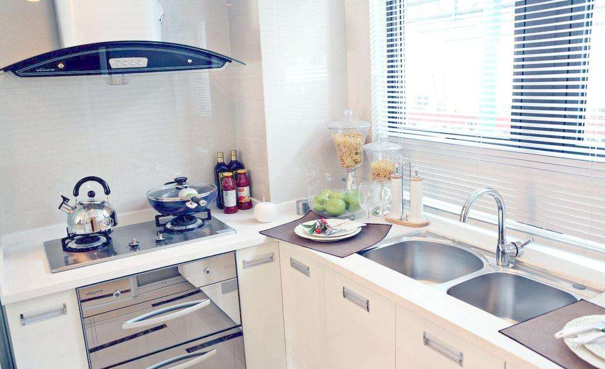

中心厨房
中心厨房，由餐饮管理公司建设家庭式的集中厨房，此厨房有以下几个硬性要求：厨房的配套设施、装修标准、装修风格全部以家庭厨房标准进行建设。
中心厨房选址及建设要求
中心厨房装修布置要求及示意图
中心厨房&候么外卖
主要服务对象是年轻新潮一代、大中学生、CBD中央商区及医院等高频次高粘性消费人群，选址要求在相对发达城市，潜在消费人群相对集中区域，布点要求要控制在点餐距离1公里以内，场所要求安全、敞亮，交通便利。
中心厨房面积
大约20~100平方左右经营用房，有水电进出通道，有集中排烟条件，有管道气，消防安全条件许可。
中心厨房设置
洗菜间、切配间、炉灶间、包装分发间、堂食间、厨房、储藏间等。
中心厨房设备设施基本要求（以20-80平方为例）
吊顶扣板、瓷砖灶台面、瓷砖配菜面、防滑瓷砖地面、石英面橱柜、瓷砖墙面、封闭烟道、不锈钢水盆、亚克力门头、节能灯和射灯
中心厨房装修布置标准
总体要求：
1. 房间敞亮，灯光明亮，墙壁白色基调，视觉明亮舒适；
2. 符合安全消防要求；
3. 按公司布局要求执行（见示意图）。
厨师
厨房所选用的厨师来自各个家庭的“家庭煮妇（夫）”，做最原汁原味的家庭菜。

淮海文化园中心厨房1号
郑师傅
拿手菜：红烧茄子、糖醋排骨

淮海文化园中心厨房2号
孙师傅
拿手菜：红烧带鱼、红烧肉
淮海文化园中心厨房3号
李阿姨
拿手菜：地三鲜、鱼香茄子
淮海文化园中心厨房3号
王阿姨
拿手菜：红烧狮子头、大煮干丝
食材
厨房所有食材集中采购制度，家用品牌标准（金龙鱼油、稻花香米、双汇冷鲜、海天调味品等等）；由餐饮公司直接与麦德龙等大型超市签署合作协议做到渠道监管。
直播
厨房配套4至6个高清摄像设备，在“候么外卖APP”上实现厨房24小时全时段直播，全民监管监督。

家庭式中心厨房建设及管理制度
中心厨房管理规定
1.准时上、下班，按时上班履行打卡手续按规定着装戴帽保持整洁上岗，不得无故迟到和早退，累计三次迟到或早退者按旷工一天处理。
2.严禁私自换班，必须经过经理同意方可换班，如有发现违反，将给予警告。
3.厨房内严禁会客，如有违反者将给予警告。
4.病假需要医院病情证明单方可有效，事假需要前两天以书面形式征得部门主管签子同意后方可休假，电话请事假一律无效，违反者按旷工处理。
5.严禁到营业场所停留和闲聊，严禁与服务员打闹嘻戏，违反者给予警告一次。
6.上班时间内严禁串岗，下班以后及时离开，不得无故逗留，违反者给予警告一次。
7.厨房内严禁吸烟、饮酒及偷吃、偷用店内食品和用具违反者给予警告一次。
8.服从管理人员的工作分配，如有违反者给予警告一次。
9.非炊管人员（领导、卫生检查人员除外）不得进入厨房、配餐处。
10.招收新工作人员必须先经过健康检查，取得健康证后方能上岗。炊管人员按规定每年进行一次健康检查，不合要求的人员应及时调离工作岗位。
炊管人员必须经过食品卫生知识培训。
11.餐厅卫生实行划区包干，责任到人。
12.各餐厅的卫生工作列入当月的考核内容，对不符合卫生要求的给予相应处罚。
13.餐厅工作场所做到每天几小扫，每周一大扫，件件工作做到"落手清"，保持餐厅工作场所的整洁。
14.讲究个人卫生，养成良好的卫生习惯，工作时必须穿工作服，戴工作帽，个人卫生除做到"四勤"外，还应做到"四不"（即不随地吐痰、不乱扔烟
蒂，不在开饭时间抽烟蹲坐、嬉闹和在操作间抽烟，不面对食品咳嗽、打喷嚏，不穿拖鞋和戴首饰戒指上班）和"四洗手"（即加工食品后再加工熟食
前洗手，工作前洗手，大小便后洗手，打扫卫生后洗手。
中心厨房操作卫生管理规定
厨房操作卫生管理规定
1.荤素原料用专用池清洗，单独存放并注上标记。
2.切配定位专桌，生熟食品分开专用，注明标记。食品生熟用具、容器、盛器有明显标志，做到生熟分开专用。配菜用的工具、容器、盛器经常保
持干净，用前消毒，用后洗刷。配菜时，不用腐败变质和过期的原料。每切配完一种食品，即刮去砧板上的污物，经常搓洗抹布。做到刀不锈，砧板
不霉，加工台面、抹布干净。待用食品洗净后放入冰箱保存。冰箱内食品分类存盘存放，不重叠，定期除霜，无异味。
确实做到“四隔离”：生与熟隔离；成品与半成品隔离；食品与天然冰隔离；凉面用净化水漂洗。
3.墙面、排风罩、工作台、灶台、地面无积灰、无污垢、无积水。厨房抽屉内整洁无灰、无蟑螂、无鼠迹。废弃物及时倒入带盖桶内，每日清除。
每班工作结束后，擦洗水斗，倒掉池中网篮内的残渣，擦洗桌面，工具、用具清洗干净，拖清地板。整理好架子、灶台，盖好辅料容器的盖子、剩余
和备用食品，或放冰箱，或加笼罩盖好，保持室内清洁卫生，每周搞一次包干区域的卫生大扫除。
4.食品充分加热，防止内生外熟。每班工作结束后调料加盖。工具、用具、灶上、灶下，地面清扫洗刷干净。
烹调卫生管理规定
1.注意食品新鲜，变质食品不炒不蒸，不下锅，不烘烤。
2.烧煮食品充分加热，烧熟烧透，杜绝外熟里生。
3.工作结束，调料容器加盖，灶上灶下冲洗清扫干净。
食品冷藏卫生管理规定
1.食品应分类保存，半成品与原料存放，生熟严格分开。
2.冰箱或冷藏柜由专人负责检查定期化霜，保持霜薄气足，确保无异味、臭味。
3.食品做到先进先出先用，已变质或不新鲜的食品不得放入冰箱或冷藏柜，食品不得与非食品一起存放，私人物品不准放入冰箱或冷藏柜。
4.当天食材当天使用，当天使用不完的另行处理，不得第二天再用。
食品清洗加工卫生管理规定
1.蔬菜按一挑、二洗、三切的顺序加工。
2.清洗加工过的蔬菜做到无泥沙、无杂草、无腐叶。
3.肉类食品、自加工时注意检查质量，腐败变质食品不加工。
4.肉类加工后无血、无毛、无污物，水产做到无鳞、无腮、无内脏。
5.宰杀家禽放血完全，除净毛和内脏，病、死家禽不宰杀、不加工。
6.工具、容器冲洗干净，荤素分开使用。
7.加工结束后将地面、水池、加工台、工具、容器清扫洗刷干净。
切配间卫生管理规定
1.切配间工作人员上岗更衣戴工作帽后进入，不得留长指甲和戴首饰。整个配菜间除工作必需之器皿工具外，不得存放其他无关用品。各种瓜果洗
净入内，并且必须与熟菜分砧切配。
2.每天上班后清理冰箱货冷藏柜一次，隔夜食品不得再次使用，另作处理；砧板、刀具用消毒液浸泡，工作人员双手也必须进行消毒，地面用消毒
溶液拖洗。
3.工作过后，案板全部洗刷擦干, 砧板洗净刮干,地面冲洗并刮净。
4.切配间各种用具必须单独使用,防止交叉感染,切配间的刀、抹布不得在切配间以外的地方使用。
5.每天下班前,各种卫生工作全部按规定完成后关闭门窗和电器、开关、灯等,此时各种人员均不得再进入切配间。
炉灶间卫生管理规定
1.炉灶工作必须做到每天清洗汤桶和全部调料罐，汤料必须洗净并且焯水，方可吊汤。烹调中文明操作，调味后必须净勺，排菜须用筷子，抹布经
常搓洗，保持洁白，灶台随时冲刷直无污物，当天炒菜过后，全部灶台、厨具及排菜桌均用清洗擦净，全部物料用品归类归位。
2.砧墩工作须做到：抹布经常搓洗，保持洁净。砧墩用后及时刮干净，不留血污。废料盆及时清理，每天工作完成后清倒垃圾桶，清洗案板和砧墩，
案板洗后全部擦净，砧墩洗后刮净竖起晾干。整个厨房地面每天班后冲洗一次，平时要保持厨房环境整洁。
安全及消防管理规定
1.厨房工作人员要熟练掌握各种电器设备的使用方法与操作标准,对各种电器设备使用时应严格按操作规程进行操作,不得随意更改操作规程,严禁违
章操作,设备一旦开始作业运转,操作人员不准随便离开现场,对电器设备高温作业的岗位,作业中随时注意机器运转情况,发现意外及时停止作业,及时
上报主管负责人,遇到故障不准随意拆卸设备,应及时报修,由专业人员进行维修。
2.对厨师使用的各种刀具要严格进行管理,严格按要求使用和放置刀具,不用时应将刀具放在固定位置,不准随意拿刀具吓唬他人,或用刀具指对他人,
收档后应将刀具放在固定位置存放,不准随意把刀带出厨房。
3.厨房的各种设备均由专人负责管理,他人不得随意乱动,定期检查厨房的各种设施设备,及时消除不安全隐患。
4.每天下班前要逐一检查油路,阀门,气路,燃气开关,电源开关的安全情况,如果发现问题应及时报修,严禁私自进行处理。
5.禁止使用湿抹布擦拭电源开关,严禁私自接电源,不准带故障使用设备。下班后要做好电源和门窗的关闭检查工作。
6.厨房如果发现被盗现象,值班人员或发现人员应做好现场的保护,并及时报上级进行处理,并及时协助领导了解情况。
7.掌握厨房和餐厅内消防设施和灭火器材的安放位置与使用方法,经常对电源线路进行仔细检查,发现超负荷用电及电线老化现象要及时报修,并及时汇报。
8.一旦发生火灾,应迅速拔打火警电话并简要说明起火位置,部门,尽量设法进行灭火,并根据火情组织引导客人进行安全撤离现场。
9.使用酒精炉及其他燃料炉时不要往正在燃烧的酒精炉内添加燃料,燃料应放在不接触火源地方。
10.在正常作业期间,厨房各出口的门均应保持畅通不得上锁,。
11.对于厨房的抽油烟机及管罩,要定期进行清理,在清洗厨房时,不要将水喷洒到电开关处,防止电器短路引起火灾。
12.热油炸开时,注意控制油温,防止油锅着火。
13.厨房晚班下班前应细致检查,熄灭火种,关严各油,气阀门,无漏油,漏气现象。
14.保持工作环境的清洁,清除工作台上的各种油污。
15.严禁在工作时间、工作场所吸烟。
食品原辅材料采购管理规定
原材料采购原则：集中采购原则，大品牌高质量原则，绿色健康无添加原则。所有原辅材料采购自知名品牌，绿色健康无污染，无添加；蔬菜类的采
购来源为各大批发市场，保证新鲜、绿色、营养；肉类产品采购来源为经过检疫部门验证合格证供货商，保证肉类新鲜、健康、干净，渠道正规、卫生达标。
1.所有食材采购，均不得采购违反《食品安全法》第二十八、第四十八、第五十、第六十条规定的食材，不得采购无《食品生产许可证》、《食品流 通许可证》的食品生产经营者供应的食品。
2.做好进货查验，查验采购食品及原料是否符合相关食品安全法规或标准要求，不得采购腐败变质、掺杂掺假、发霉生虫、有毒有害、质量不新鲜的
食品及原料，以及无产地、无厂名、无生产日期和保质期或标识不清以及超过保质期限的食品。
3.采购肉类应查验是否为定点屠宰企业屠宰的产品并查验检疫合格证明；不得采购没有检疫合格证明的肉类。进口食品及其原料应具有检验检疫机构
出具的检疫合格证书。
4.采购食品、食品原料、食品添加剂和食品相关产品均应严格索证索票，包括供应商资质证明、产品合格证明、发票、收据、供货清单、信誉卡等。
不得采购使用无包装、无标识、无生产厂、无生产日期、无保质期、无票证等假冒伪劣和来源不明的食用油脂。
5.建立食品采购索证和进货验收台帐记录，分类并按时间顺序存档管理，指定专（兼）职人员负责。采购记录应当如实记录产品名称、规格、数量、
生产批号、保质期、供货者名称及联系方式，进货日期等内容，保留载有上述信息的进货票证，以备查验。
6.台帐存放应方便查验，记录，票证的保存期限不得少于2年。